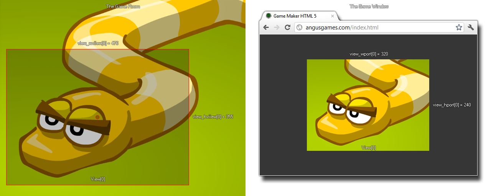

view_wport
绘制区域内，视野屏幕输出的宽度。Width of the viewport in the drawing region.
Syntax 用法:
view_wport[0...7]
Returns 返回: Real 实数
Description 描述
这个变量可用来获得或设置指定视野输出的宽度。 视野输出的宽度（或者多个激活视野输出的合成）在游戏运行时定义游戏窗口或背景画布的宽度，但是游戏开始运行后改变这个值不会改变游戏窗口的大小。如果你的视野输出比设定的视野更大更更小，视野取景将会缩放以适应输出的大小，如下图所示。
This variable can be used to get or to set the width of the specified viewport. The width of the viewport (or combined view ports if more than one are active) define the width of the game window or background canvas at the start of the game, but
changing this value after the game has started will have no visible effect on the game window size. If you have a larger or smaller port size than that assigned to the view, the view will be scaled down or up to fit, as illustrated by the image below.

Example :
view_hview[0] = view_hport[0]; view_wview[0] = view_wport[0];
上述代码将设置视野屏幕输出的高度和宽度等于视野的大小。
The above code sets the width and height of the view to be the same as the width and height of the view port.
-断水-